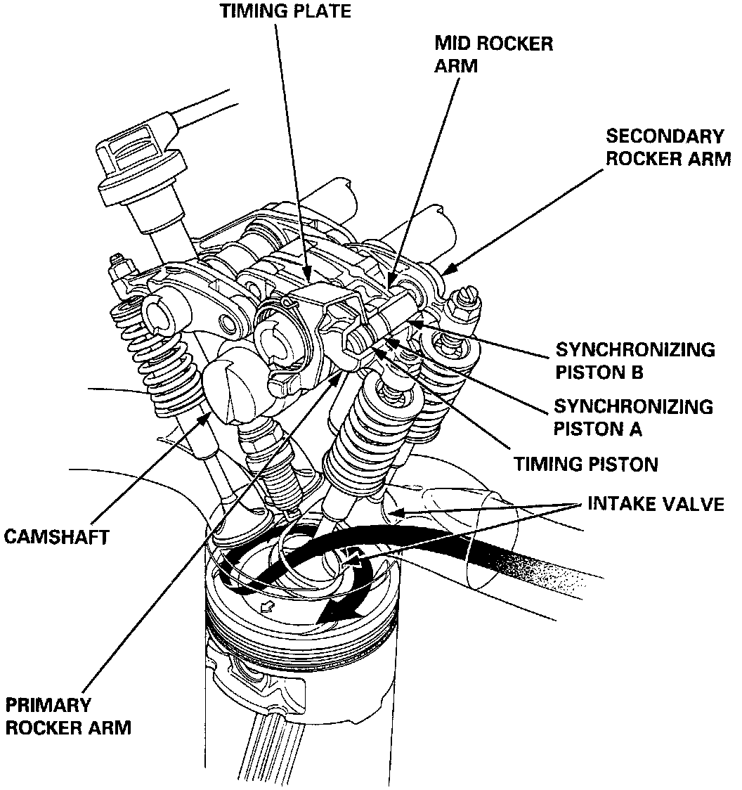
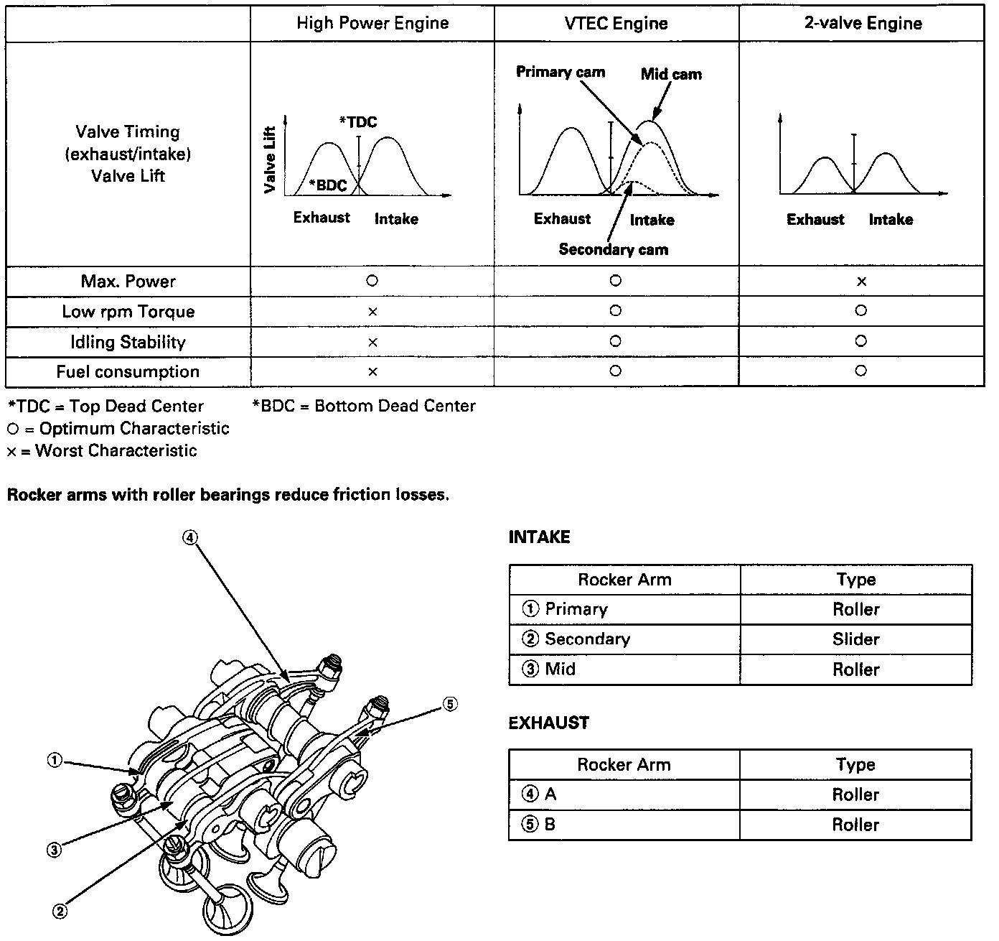

VTEC Variable Valve Timing Control System
VTEC - Valve Train:

VTEC - System Description:

DESCRIPTION
The engine has a single cam, 4 valves per cylinder arrangement with the addition of a Variable Valve Timing and Valve Lift Electronic Control System (VTEC). When VTEC is disengaged, the primary intake valve opens and closes normally and the secondary intake valve opens only slightly (to prevent fuel "puddling" behind the valve) When VTEC engages, the valve train switches between single intake valve operation (with mild lift and duration) and two intake valves with high lift and duration. This system produces high fuel economy at low engine speeds and high output when desired.
OPERATION
The system engages when the following conditions exist:
^ Engine speed: 2,300 - 3,200 rpm (depending on manifold pressure)
^ Vehicle speed: 6.2 mph (10km/h) or faster
^ Engine coolant temperature: 50°F (10°C) or higher
^ Engine Load: Judged by intake manifold negative pressure
Once these conditions have been met, the Engine Control Module (ECM) signals the VTEC solenoid valve to open by applying battery voltage. The open valve allows engine oil at operating pressure to enter the rocker arm assembly and move pins located in the primary, secondary and middle rocker arms, locking them together. The middle rocker follows a high lift and duration lobe. Once locked together, both intake valves open and close in response to this high performance cam lobe profile. The VTEC pressure switch sends a signal to the ECM confirming that the solenoid has directed oil into the locking pins.